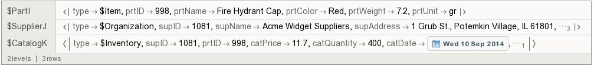

Table of Contents
Introduction
In early 2009 an increasing number of non-relational DBMS started to appear on the scene. They were based on data models such as Column, Document, Key-Value, Graph and Multi-Model. At about the same time, big corporations in IT industry were concerned with data processing of large and complex data sets. Big data movement was a major driving force to re-examine whether current DBMS were sufficient to cope with the new requirements on data processing. More specifically the four V’s of Big Data, i.e. volume, variety, velocity and veracity, put an increasing demand in major companies and organizations. This had as a result a reinvestigation on what DBMS technology to apply. Many started realizing that physical representation of data on the disk or in memory and data modeling are key factors on how you build or integrate parts of your IT solution.
While most players in the IT sector adopted Graph or Document databases and Hadoop based solutions, Hadoop is an enabler of HBase column store, it went almost unnoticed that several new DBMS, AtomicDB previous database engine of X10SYS, and Sentences, based on associative technology appeared on the scene. We have introduced and discussed about the data modelling architecture and the atomic information resource unit (AIR) of AtomicDB. Similar technology has been the engine power of Qlikview, a very popular software in Business Intelligence and Analytics, since 1993. Perhaps it is less known to the reader that the association construct is a first class citizen in Topic Map semantic web standard and it is translated to (RDF), the other semantic web standard. In other posts of this series we can see how it is possible to implement Associative Technology in multi-model graph databases such as OrientDB, in object-relational DBMS such as Intersystems Cache and Oracle or build the engine for in-memory processing with Wolfram Mathematica. In this article, we introduce the concept of association from the perspective of Entity-Relationship (ER) data model and illustrate it with the modelling of a toy dataset.
Supplier-Part-Catalogue Dataset
Our dataset is a collection of three related database tables. Two of the tables, Supplier ( TSV, XLSX ) and Part ( TSV, XLSX ), represent and describe Entity Types, i.e. Relations. The third one, Catalogue ( TSV, XLSX ) is the associative entity, a.k.a. bridge table, junction table, join table, etc. The typical case where data for the bridge table is captured is from a business inventory where each item is recorded with its unit price and a quantity in stock. Such information is stored in our Catalogue table, together with a date the item record was modified and a flag that indicates inspection of the stock.
The ER Data Model
Quite often (ER) Data Model is confused with the Relational Data Model. The reader should become familiar with the following equivalent terminology.
| ER Data Model | Relational Data Model |
|---|---|
| Entity Type (Set) | Relation (Table, Base relvar) |
| Heading - ordered set of attributes | |
| Body - set of n-tuples, extension of a predicate | |
| Entity (instance, member) | Tuple (ordered set of attribute values) |
| Value Set | Type name (data type) |
| Value | Attribute value |
| Relationship set | View (Result set or Derived relvar) |
| Relationship (association) | |
| Attribute (function) | Free variable of a predicate |
| mapping of Entity Set or | Attribute name of the relation (column) |
| Relationship Set to Value Set | ordered pair of attribute name and type name |
In this classic paper, “The Entity-Relationship Model - Toward a Unified View of Data” Peter Chen defines relationship as an association among entities. In the same paper entity and relationship are illustrated as hypergraphs. In particular, Fig. 2 at page 13 and Fig. 3 at page 14 show how an instance from an Entity/Relationship set is linked to either values or other entities. Although Peter Chen did not describe these fundamental constructs of his data model with Hypegraph terms, it can be easily seen in these captured figures that a specific entity or relationship form hyperedges with other entities or values that play the role of hypernodes.
(Emploee):Ei at Fig.2 and (PROJECT-WORKER):Ri at Fig.3 form hyperedges
{kind=link}
(Emploee):Ei at Fig.2 and (PROJECT-WORKER):Ri at Fig.3 form hyperedges
{kind=link}
Association and Associative Array
We extend the definition of association in the (ER) data model to cover both Entities and Relationships. In the aforementioned paper, Chen formally defines attribute as a function which maps a given entity to a single value (or a single tuple of values). He also mentions that relationships have their own attributes whose meaning depends on the associated entities. The (key,value) pair of an Associative array, a.k.a. map, symbol table, or dictionary, captures this functional operation of attribute.
Wolfram Language - Association
Wolfram Language is using Association fundamental construct to represent an associative array. The following three Wolfram Language associations represent a relationship of a Catalog instance with a Supplier instance and some Part instance from our toy dataset.
(* Supplier Association *)
<|supID->1081, supName->"Acme Widget Suppliers", supAddress->"1 Grub St., Potemkin Village, IL 61801", supCity->"ILLINOIS", supCountry->"USA", supStatus->10|>
(* Part Association *)
<|prtID->998, prtName->"Fire Hydrant Cap", prtColor->"Red", prtWeight->7.2, prtUnit->"gr"|>
(* Catalogue Association *)
<|supID->1081, prtID->998, catPrice->11.7, catQuantity->400, catDate->"Wed 10 Sep 2014", catCheck->True|>
What we are missing in this representation are the hyperedges, i.e. the nexuses that link together hypernodes. According to hypergraph terminology, the edge that connects a hyperedge to a hypernode is called hyperlink or connector. You may think of these hyperlinks/connectors as hash fields but we need another identifier for the hash key, i.e. an identifier for the instance. We could have used supID, prtID or a combination of these two but we prefer to define new identifiers for hyperedges. The main reason for this is that in principle we want to design a uniform way of addressing and identifying both hyperedge and hypernode instances at a low-dimensional, e.g. (2D,3D,4D), space. If we encode this way, it is possible to avoid namespace problems. In this post we use names to compare the graph with figures from Peter Chen’s paper.

We may also connect hyperedges, e.g. we can add a “type” hyperlink that maps instances to classes, a “vendor” hyperlink that maps a Catalog instance to its Supplier instance and a “stockItem” hyperlink that connects Catalog instance to Part instance. In Wolfram Language it is relatively easy to make a graph of these Associations. We colorized the graph according to the different data types we have, i.e. hyperedges, strings, doubles, integers, dates, and booleans, Fig.4.
Hyperedges are displayed in red, strings are in grey, doubles in lightblue, integers in green, dates in lightgreen and boolean in black
{kind=link}
JSON Serialization
Another very popular representation for Association is JSON Serialization. Those associations we described above can be serialized with the following format.
{
"$PartI": {
"type": "$Item",
"prtID": 998,
"prtName": "Fire Hydrant Cap",
"prtColor": "Red",
"prtWeight": 7.2,
"prtUnit": "gr"
},
"$SupplierJ": {
"type": "$Organization",
"supID": 1081,
"supName": "Acme Widget Suppliers",
"supAddress": "1 Grub St., Potemkin Village, IL 61801",
"supCity": "ILLINOIS",
"supCountry": "USA",
"supStatus": 10
},
"$CatalogK": {
"type": "$Inventory",
"supID": 1081,
"prtID": 998,
"catPrice": 11.7,
"catQuantity": 400,
"catDate": "2014-09-10",
"catCheck": true
}
}
Catalogue, Parts and Suppliers tables are also available in JSON format.
Association vs Relation
Although the logical view of Chen’s (ER) data model and his popular diagrammatic technique incorporates Entities, Relationships, Attributes and Values, at the physical layer of any relational DBMS we find records, i.e. Entities or Relationships are ordered tuples. A set of these ordered tuples that have the same heading, is called body. This header is another ordered tuple with attribute names. Theoretically speaking the body and the header of a table make the Relation. In practise the header is separated from the body and located at the database catalog together with other metadata for the schema of the database. SQL standard specifies a uniform mean to access this catalog.
Wolfram Language - Relation
The List fundamental construct of Wolfram Language can be used to represent a Relation. An extensive analysis of various representations and transformations on the constructs of the Relational data model in Wolfram Language can be found here.
(* Part Relation with a header and three tuples (body) *)
{
{"pid", "pname", "pcolor", "pweight", "punit"},
{991, "Left Handed Bacon Stretcher Cover", "Red", 15.5, "lb"},
{992, "Smoke Shifter End", "Black", 3.75, "lb"},
{993, "Acme Widget Washer", "Red", 142.88, "kg"}
}
The reader will notice that in both Associative array and Relation representations, the cell of a table, i.e. the value of an attribute, is always functionally dependent on the description of Attribute and Entity/Relationship. It cannot stand on its own without these semantic references. Moreover, for the Relation representation, the exact order of values has to be maintained together with any missing (NULL) values.
Data Redundancy
Relational databases are usually normalized to eliminate duplication of information and ensure referential integrity. This is especially recommended in one-to-many relationships. Normalization involves arranging attributes in tables, nevertheless in a relational database we cannot escape from data redundancy completely. For example if we take the unit attribute of the normalized Part table above we can see that values are still repeated. Most important the schema of a relational database is too rigid and cannot be easily modified without breaking normalization and compromising referential integrity.
Structured Query Language (SQL)
Performing queries of data in a relational database is highly dependent on these two factors we briefly mentioned above, the physical representation of data on the disk and the normalization procedure. One of the main bottlenecks with SQL is the natural join relational operator, counterpart of logical AND. An SQL Join is a means for constructing a result set combining columns from two (or more) tables by using values common to each. The more tables you join and the bigger the size of each table the more time it takes to consolidate the data of the view. On the contrary in many graph databases, connected nodes, i.e. record instances, are directly linked to each other. Each node, contains a list of pointers of its edges, therefore avoiding look-ups. In fact you are not searching for records, you are traversing connections instead. This may dramatically reduce the speed of constructing the result set of a query.
For demonstration and comparison purposes we provide such a JOIN sql query for our toy database together with an ER diagram of the database schema,Fig.5 and the result set on a Microsoft Access table view, Fig.6.
You may also download a Microsoft Access, accdb file format, database to experiment with.
Image illustrates the ER diagram of database schema
{kind=link}
Image illustrates the ER diagram of database schema
{kind=link}
SELECT Catalog . catsid ,
Catalog . catpid ,
Suppliers . sname ,
Parts . pname ,
Catalog . catcost ,
Catalog . catqnt ,
Catalog . catdate ,
Catalog . catchk
FROM Suppliers
INNER JOIN ( Parts
INNER JOIN [Catalog]
ON Parts . pid = Catalog . catpid )
ON Suppliers . sid = Catalog . catsid
ORDER BY Suppliers . sname DESC ,
Catalog . catcost DESC ;
One can immediately notice the complexity of SQL query language on the nested SQL Join constructs.
Summary
In this article we described several limitations of the ER model that we wish to overcome, in brief these are:
- Functional dependence of values
- Data redundancy
- Join operations
In the next article of our series we continue with an international industry standard for information management and interchange, the Topic Maps Data Model (TMDM). Associations in TMDM are similar to tuples but they have types. Each member of an association plays a role that is defined explicitly. In fact this is in full agreement with Chen’s Entity-Relationship diagrams (see Fig.1 and Fig.2 above). Chen discusses the role of an entity in a relationship and the role of an attribute in a relation and he considers distinct constrains on allowable values for a value set and constraints on permitted values for a certain attribute.
TMDM view is edifying because it divides information space in two layers. At the conceptual level we have topics that can be associated and represent any subject that can be conceived by a human being. At the occurrence level we have addressable information resources that describe those subjects.